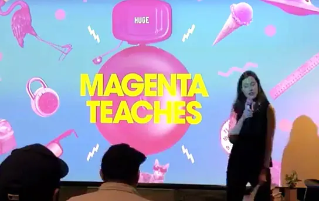
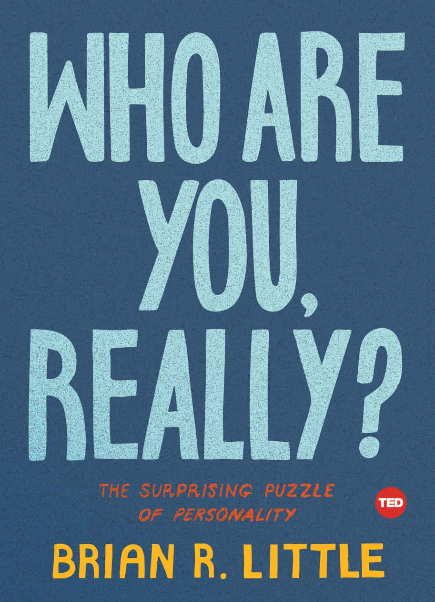
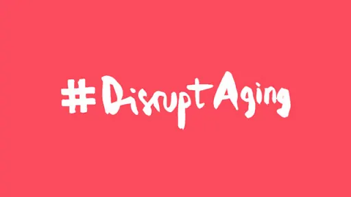
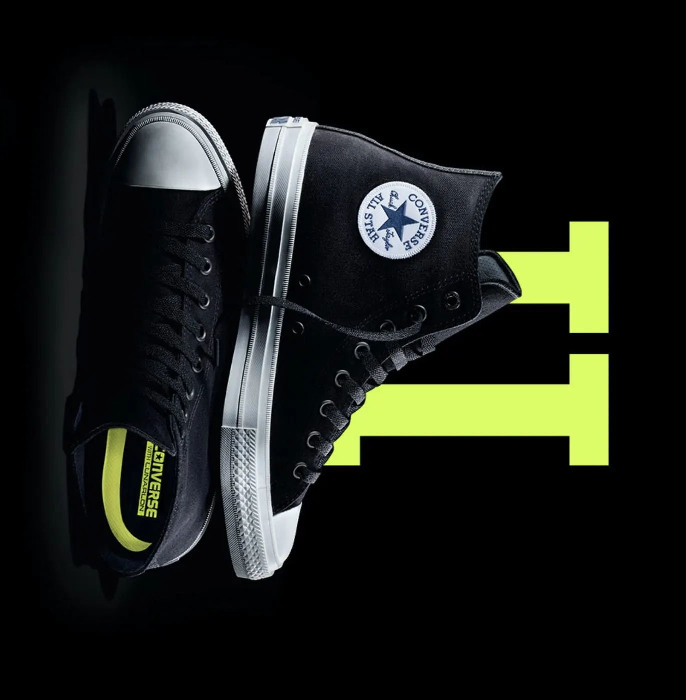

Editorial Strategy · NYC
Editor. Strategist. Storyteller.
I'm a design‑savvy content strategist, editor, and writer. I care about clear, concise prose, great user experience, and the power of a story well told.
Editorial Strategy
Long‑running editorial leadership for design‑forward brands and publications.

Samsung Explore / Razorfish
Editorial lead of Samsung's award‑winning lifestyle publication, helping consumers elevate their passions with tech.
Editor‑in‑chief
Magenta
Huge's publication for people who think about people, technology, and design like it's their job.
Founding editor‑in‑chief
Magenta Teaches
A quarterly knowledge‑sharing series on topics relevant to all creatives.
OrganizerSY Partners
Editorial strategist for digital products at the brand‑transformation studio.
ConsultantFast Company Co.Design
Editorial strategy for branded events, newsletter campaigns, and the publication itself.
Editor
Who Are You, Really?
Brian R. Little, TED Books.
Editor
Disrupt Aging
AARP book and supporting digital experience.
Researcher · writer · editorPublications & Clients
A selection of the magazines, agencies, and brands I've written or edited for.
Selected Writing
Reported features, book reviews, and design criticism for national publications.

'How Great Ideas Happen' Review: Building a Brainstorm
The romantic idea of an insight that suddenly dawns is misleading. Most breakthroughs come slowly.
January 30, 2026'True Color' Review: Not‑So‑Black‑and‑White
In the early 1900s, defining color in the dictionary required the expertise of a scientist.
March 27, 2026
'Warhol After Warhol' Review: A Question of Authenticity
The "Red Self‑Portrait" owned by one collector is not a fake, according to the artist's foundation — but not truly a Warhol.
December 15, 2023
'The Cult of Creativity' Review: Riders on the Brainstorm
'Imagination, like muscle, can be built up by exercise,' preached ad man Alexander Faickney Osborn. Not everyone agrees.
October 20, 2023
'Anatomy of a Breakthrough' Review: Expect Delays
We all encounter creative blocks. We make strides on a project — mastering a sport, building a company — and then we don't.
May 18, 2023Nissan Wants to Fill the Streets with the Sweet Sound of EVs
May 16, 2019
One Tech Company's Revolutionary Idea: Design for Mothers First
September 27, 2017
After 98 Years, Chuck Taylors Will Finally Get Some Cushioning
July 23, 2015To Sell Wearables to Women, First Make Them Feel Bad
January 13, 2015More Writing
- '1,000 Marks' Review: Mondo Logo The Wall Street Journal · January 10, 2025
- 'Slouch' Review: The Panic Over Posture The Wall Street Journal · April 12, 2024
- 'Empire of the Sum' Review: It All Adds Up The Wall Street Journal · August 21, 2023
- Holiday Gift Books: Design The Wall Street Journal · November 17, 2022
- 'Talent' Review: Hire Learning The Wall Street Journal · June 12, 2022
- Holiday Gift Books 2021: Business The Wall Street Journal · November 17, 2021
- 'No Compromise' Review: The First Woman of Modern Design The Wall Street Journal · June 18, 2021
- 'The New Corner Office' Review: Remote Control The Wall Street Journal · August 2, 2020
- 'iBauhaus' Review: The Seeds of the Apple Aesthetic The Wall Street Journal · March 6, 2020
- 'The Longing for Less' Review: Upscale Austerity The Wall Street Journal · January 1, 2020
- 'Indistractable' Review: Fixing Our Attention The Wall Street Journal · October 3, 2019
- 'In Miniature' Review: Let's Get Small The Wall Street Journal · June 7, 2019
- Spring Books: Spring Cleaning The Wall Street Journal · April 12, 2019
- Gender Stereotypes Begin at Age 10 Johns Hopkins Health Review · September 7, 2018
- What Makes a Great Book Cover Magenta · May 17, 2017
- History's Most Powerful Protest Art Magenta · November 23, 2016
- The Atlanta Falcons's New Stadium Looks Amazing Fast Company · September 12, 2016
- Jony Ive's Promotion Isn't About Jony Ive WIRED · May 27, 2015
- How Will Smartwatches Change Apple Stores? Bloomberg Businessweek · March 9, 2015
- Welcome to My Crib Bloomberg Businessweek · June 3, 2015
- This Restaurant Turns Diners Into Lab Rats Bloomberg Businessweek · February 13, 2015
- SNL's 13 Best Fake Ads as Chosen by Ad Execs Bloomberg Businessweek · February 13, 2015
- The Smart Ring and the Smart Belt Are Actually Kind of Stupid Bloomberg Businessweek · January 4, 2015
- This Top Ad Agency Rearranged Its Office Around Millennials Bloomberg Businessweek · December 22, 2014
- Cozy in Your Cubicle? An Office Design Alternative May Improve Efficiency Bloomberg Businessweek · September 18, 2014
- The Odd Logic of Kickstarter's Glut of Slim Wallets Bloomberg Businessweek · June 2, 2014
- How Apple Store Changed Retail Landscape SFGate · July 25, 2014
Say hello.
Open to editorial strategy, content systems, and writing assignments.